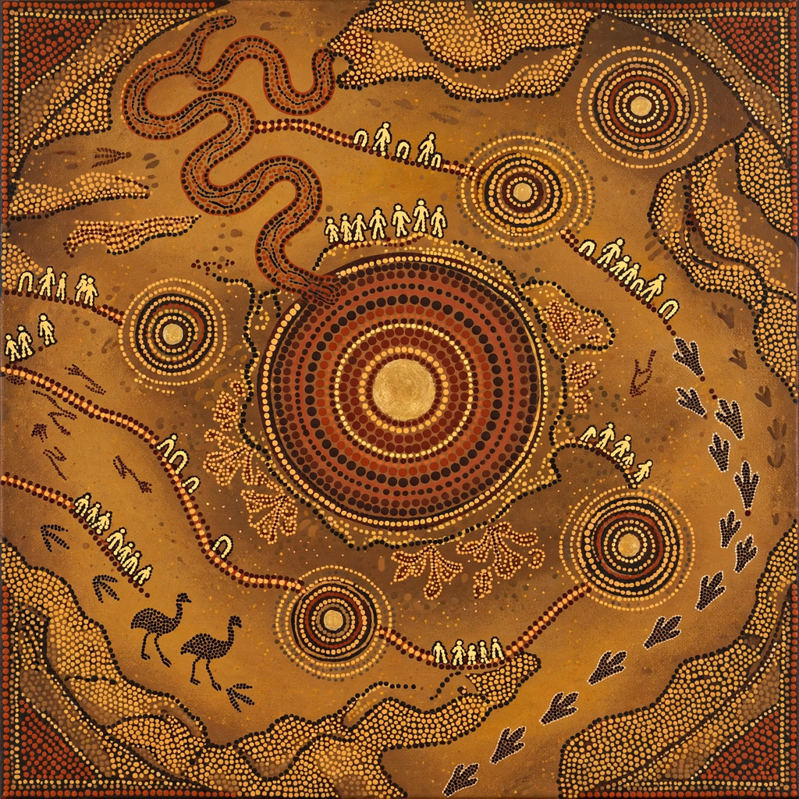

Dreaming (Aboriginal Australian spirituality)

The Dreaming, also called the Dreamtime, is a central concept in the spirituality and worldview of Aboriginal Australian peoples. It describes the time of creation, when ancestral beings travelled across the land, shaping its features, establishing law, language and custom — and it also denotes the ongoing spiritual dimension of existence in which those ancestral beings remain present. The term derives from a translation of the Arrernte word altyerre (or tjukurrpa in several Western Desert languages).
Meaning and translation
Anthropologists such as W. E. H. Stanner popularised the English rendering "Dreaming"; Stanner also coined the term "everywhen" to convey that the Dreaming is not located solely in a distant past but is a continuing, timeless dimension: past, present and future coexist within it. Each Aboriginal language group has its own word and its own body of Dreaming stories (sometimes called "songlines" when they trace the routes of ancestral journeys across country), and relating or translating the concept in a single English term remains imperfect.
Cosmology and law
In Dreaming narratives, ancestral beings — often animal, plant or human in form — emerged from the earth or sky, journeyed across a formless land, and by their actions created rivers, mountains, waterholes and species. Their journeys laid down the moral and legal order ("the Law") governing kinship, ceremony, land tenure and responsibilities to country. Sacred sites mark places where ancestors acted, and custodians maintain them through ceremony, song, dance and art.
Connection to country and identity
Individuals and groups derive identity, totems and obligations from particular Dreamings associated with their ancestral country. Stories are owned and transmitted under strict protocols; some knowledge is restricted by gender, age or initiation status. Dreaming traditions underpin Aboriginal land claims, since they encode continuing connection to land recognised in cases such as the Mabo decision (1992) and the Native Title Act 1993.
Art
Dreaming stories are expressed in rock art, body painting, carved objects and, since the 1970s, the acrylic dot paintings of the Western Desert art movement centred on Papunya, which brought Dreaming imagery to international audiences while adapting its conventions to protect restricted knowledge.